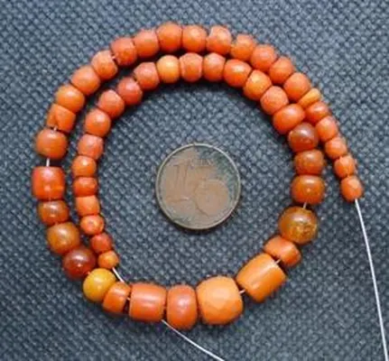
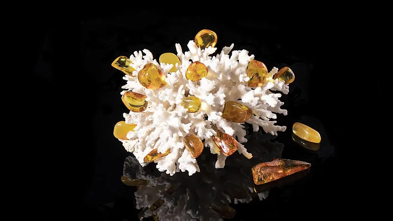

珍珠總論：暈彩與圓潤的奧秘
一顆沙，一粒貝——珍珠把「刺激」變成「珍寶」的過程，是自然界最溫柔的魔法。


核心定義
珍珠（pearl）是貝類分泌珍珠質包裹刺激物形成的寶石：主要成分是碳酸鈣（文石）＋貝殼素（有機質）＋水。天然珍珠是偶然形成，養殖珍珠則是人類植入珠核/珠片引導形成——兩者在成分上完全相同。
珍珠家族：海水珠（Akoya、南洋珠、大溪地珠）與淡水珠（中國、美國）——海水珠圓度佳、光澤銳利，淡水珠產量大、形狀多樣（巴洛克）。珍珠的價值看五維：圓度、光澤、大小、珠層、瑕疵。
特徵與分類
| 種類 | 產地 | 特徵 |
|---|---|---|
| Akoya | 日本、中國 | 小顆、光澤銳利、經典 |
| 南洋珠 | 澳洲、印尼 | 大顆（9-16mm）、金白 |
| 大溪地珠 | 法屬玻里尼西亞 | 黑灰綠暈、神秘 |
| 淡水珠 | 中國 | 產量大、形狀多樣 |
「暈彩」（orient）是珍珠的光學名片：光線在文石層間反射干涉，產生彩虹般的柔光——暈彩越明顯，珍珠越美。珍珠的光澤分級：極強、強、中、弱——光澤是珍珠價值的核心。
科學原理
珍珠為什麼圓？因為貝類分泌的文石薄層以「同心圓」方式包裹刺激物——層層累積，就形成圓形。珍珠的圓度由珠核形狀、分泌均勻度與培育環境決定——天然珍珠多不圓，完美圓珠反而罕見。
珍珠的暈彩與光澤：文石層厚度與光波長相近時，反射光干涉產生暈彩；層數越多、排列越規則，光澤越銳利——所以珠層厚的珍珠又亮又潤。珍珠硬度 2.5–4、怕酸怕汗，是寶石界的「嬌客」。
鑑定與鑑別方法
- 看光澤：強光澤 vs 塑料啞光
- 看暈彩：七彩柔光
- 摸表面：珍珠微涼帶砂感（vs 塑膠滑）
- 牙齒輕刮：珍珠有砂感（vs 玻璃光滑）
- 證書確認：海水/淡水、天然/養殖
市場行情與保養建議
行情上，天然海水珍珠極罕見（天價），養殖珍珠是市場主流：南洋珠（大顆貴氣）與大溪地珠（黑蝶貝）單顆可數千至數萬人民幣，Akoya 是經典入門，淡水珠親民。
選購提醒：光澤優先、圓度次之（巴洛克自有美學）、珠層要厚（影響耐久與光澤）；證書會標明海水/淡水與處理（染色、輻照）。珍珠買「亮」，不買「大」。
常見誤區
養殖珍珠與天然珍珠成分完全相同（碳酸鈣＋貝殼素）——區別只在「是否有人類引導」。養殖不是假，是「計畫生育」。
光澤與圓度優先：大而啞的珍珠不如小而亮的。南洋珠大但 Akoya 光澤銳利——「大」不是價值的唯一函數。
冷知識
Akoya 珠要養 1-2 年、南洋珠要 2-4 年——貝類用數年生命，換一顆寶石。時間，是珍珠的原材料。
鑽石來自地底、紅寶來自礦脈——只有珍珠，是生物體自己的創作。它是「活的寶石」。
反直覺觀點
貝類包裹刺激物是免疫反應（就像人類的囊腫）——珍珠的美，源自生命的防禦機制。最美麗的寶石，是傷口的結晶。
巴洛克珍珠（不規則形狀）近年受設計師追捧——個性化審美讓「瑕疵」成為風格。圓是古典美，不圓是現代美。